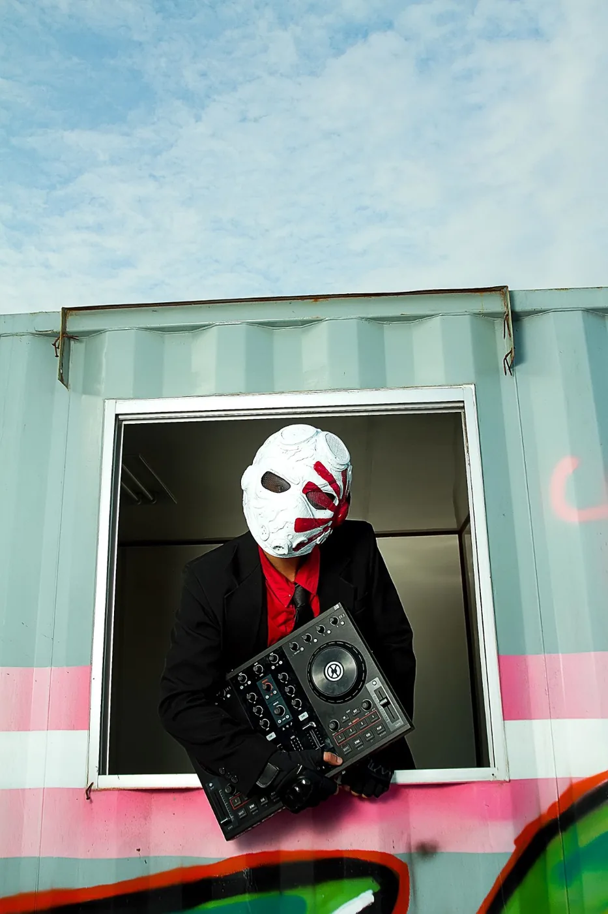
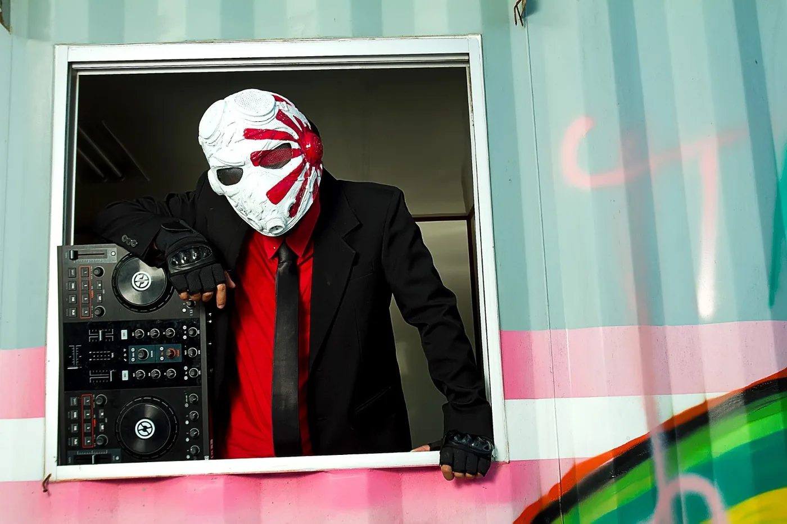

Dubstep
Heavy drops, tension, impact.
Masked dubstep and bass alter ego of Arda Moron. A separate performance identity built for heavier, darker, high-impact sets.
KAMIKAZE exists beside Arda Moron, not above it. The project is the heavier outlet: masked, aggressive, bass-driven, and visually separated from the house-focused main identity.
Heavy drops, tension, impact.
Dark, physical, high-pressure.
A distinct stage character and visual world.

